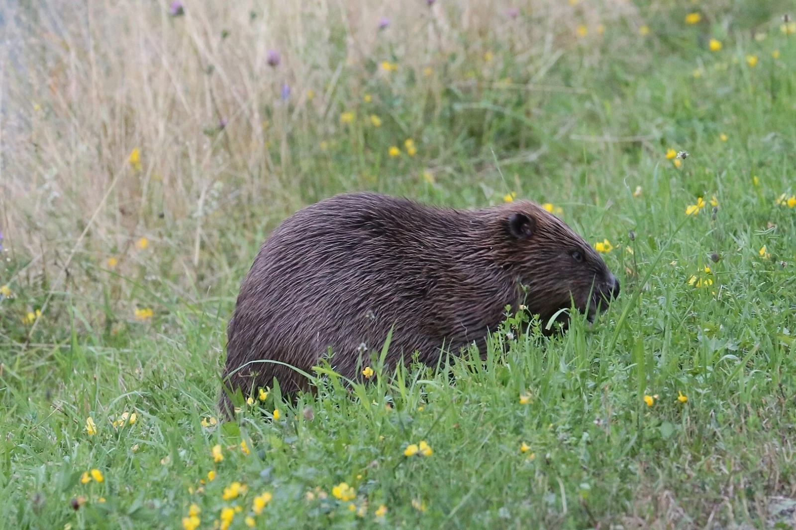

Зовнішній вигляд
Бобри - великі водоплавні гризуни з густим коричневим хутром. Вони мають широкі, лускаті хвости, які слугують для керування під час плавання, а також великі передні зуби для гризіння деревини.
Особливості будови
- Довжина тіла бобра становить 90-120 см, хвіст - близько 30 см, вага - 18-30 кг.
- Мають перетинки між пальцями задніх лап, що робить їх чудовими плавцями.
- Передні зуби - різці - постійно ростуть і мають помаранчевий колір через вміст заліза в емалі.
